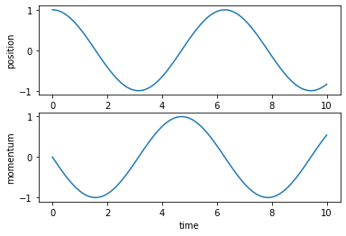

import jax.numpy as jnp
from jax import grad
def poisson_bracket_darboux(f, g):
return lambda q, p: (jnp.dot(grad(f, argnums=0)(q, p),
grad(g, argnums=1)(q, p))
- jnp.dot(grad(f, argnums=1)(q, p),
grad(g, argnums=0)(q, p)))I finally spent some time playing around with JAX. I was especially curious about its automatic differentiation system, which is obviously very useful for computing gradients in machine learning, but also opens up new possibilities for physical modeling. In particular, the Autodiff Cookbook advertises the correspondence between the grad API and differential geometry, which is the fundamental language of classical mechanics.
Concretely, you can quickly define functions on the phase space with jax.numpy and then automatically compute their gradients. The phase space is the space of all possible states of a physical system, for instance the positions \(\vec x_i\) of its constituent particles and their momenta \(\vec p_i\), or the orientation of a rigid body and its angular momentum. In general, the coordinates of a phase space can always be locally chosen so that they are split into positions \(\mathbf{q} = (q_1, \dots, q_n)\) and conjugate momenta \(\mathbf{p} = (p_1, \dots, p_n)\), and their time evolution is given by the equations of motion
\[ \begin{aligned} \dot{\mathbf{q}} &= \frac{\partial H}{\partial \mathbf{p}} = \lbrace \mathbf{q}, H \rbrace \\ \dot{\mathbf{p}} &= -\frac{\partial H}{\partial \mathbf{q}} = \lbrace \mathbf{p}, H \rbrace \end{aligned} \tag{1} \]
where \(H(\mathbf{q}, \mathbf{p})\) is the Hamiltonian function of the system, or simply the Hamiltonian, which is essentially its energy. With automatic differentiation, all you need to build this set of differential equations is to specify the Hamiltonian function, which can spare you a lot of pain.
The curly braces are the Poisson bracket, a fundamental structure of the phase space. In the canonical coordinates \((\mathbf{q}, \mathbf{p})\), also called the Darboux coordinates, it is defined as
\[ \lbrace f, g \rbrace = \sum_{i=1}^n\left( \frac{\partial f}{\partial q_i}\frac{\partial g}{\partial p_i} - \frac{\partial f}{\partial p_i}\frac{\partial g}{\partial q_i} \right) \tag{2} \]
for any two functions \(f\) and \(g\) on the phase space. Together with the Hamiltonian function, the Poisson bracket encodes the time evolution of any observable of the system (a quantity that depends on the state of the system and can be measured),
\[ \frac d{dt}f(\mathbf{q}, \mathbf{p}, t) = \lbrace f, H \rbrace + \frac{\partial f}{\partial t}. \tag{3} \]
The mathematical interpretation is that the Poisson bracket transforms the Hamiltonian function \(H\) into a vector field \(\lbrace \cdot, H \rbrace\), the so-called Hamiltonian vector field.
The Poisson bracket is also an essential piece in the connection between classical and quantum mechanics, but this is another story and we will get back to it when quantum computers are more broadly available.
In JAX, the Poisson bracket in Darboux coordinates can be defined as a function that takes as its arguments two functions of q and p and returns a third function of q and p, where q and p are arrays.
Harmonic Oscillator
As an example, we can consider the harmonic oscillator, the Drosophila of theoretical physics, with Hamiltonian
\[H(\mathbf{q}, \mathbf{p}) = \frac{\mathbf{p}^2}{2m} + \frac{k\,\mathbf{q}^2}{2}, \tag{4}\]
and we set \(m=k=1\) for convenience. Two observables are simply the position and the momentum.
def harm_osc_hamiltonian(q, p):
return 0.5*jnp.dot(q, q) + 0.5*jnp.dot(p, p)
def position(q, p):
return q
def momentum(q, p):
return p
print(poisson_bracket_darboux(harm_osc_hamiltonian, position)(5., 10.))-10.0Note that this code works only if \(q\) and \(p\) are one-dimensional since the Poisson bracket accepts only scalar-valued functions as its arguments. If we work with higher-dimensional spaces, we can also select a single coordinate, for instance with a lambda function.
q_3d = jnp.array([1., 2., 3.])
p_3d = jnp.array([4., 5., 6.])
print(poisson_bracket_darboux(harm_osc_hamiltonian, lambda q, p: q[1])(q_3d, p_3d))-5.0For easy integration, the right hand side of the Hamiltonian equations of motion can be fed to the odeint integrator from the jax.experimental.ode module. The initial conditions can be specified as an array or a pytree of arrays. In this case, a tuple y0 = (q0, p0) of the initial values of the position and momentum is convenient as it can be passed as a *args to the functions we defined on the phase space.
The first argument of odeint is a function to evaluate the time derivative of the solution y at time t. In the geometric interpretation, we talk about a vector field. Here we can use the poisson_bracket_darboux function applied on the functions we defined on the phase space.
from jax.experimental.ode import odeint
t = jnp.linspace(0., 10., 101)
y0 = (1., 0.)
def harm_osc_hamiltonian_vector_field(y, t):
return (poisson_bracket_darboux(position, harm_osc_hamiltonian)(*y),
poisson_bracket_darboux(momentum, harm_osc_hamiltonian)(*y))
y = odeint(harm_osc_hamiltonian_vector_field, y0, t)We can plot the solution to check that we obtained the expected sinusoidal oscillations.

Gravity
To explore more features of Hamiltonian mechanics, we need a problem with more dimensions. In this age of space tourism, the physics of a small test mass moving around in the gravitational field of a much more massive object is particularly relevant. “Much more massive” in this context means that we can assume that the very heavy body sits at rest and only the very light body orbits around it. The phase space of this system corresponds to the position \(\vec{q}\) and momentum \(\vec{p}\) of the test mass, where we have set the origin at the position of the heavy object. The Hamiltonian is given by
\[H(\vec{q}, \vec{p}) = \frac{\Vert\vec{p}\Vert^2}{2m} - \frac{GmM}{\Vert\vec{q}\Vert} \tag{5}\]
where \(m\) and \(M\) are the masses of the light and heavy objects respectively, and \(G\) is the gravitational constant. Since I am a mathematical physicist, I like to use a natural unit system where \(G\cdot M=e=c=\hbar=k_B=1\) and cows are spherical with radius 1. For convenience, we also set \(m=1\).
If we wanted to use the Poisson bracket to compute the Hamiltonian vector field like we did for the one-dimensional harmonic oscillator, we would have to do it component by component, so it is more practical to use the gradients of \(H\) directly in the equations of motion (1).
def gravitation_hamiltonian(q, p):
return 0.5*jnp.dot(p, p) - 1/jnp.sqrt(jnp.dot(q, q))
r0 = 1.
p0 = 1.2
t = jnp.linspace(0., 15., 101)
y0 = (jnp.array([r0, 0., 0.]), jnp.array([0., p0, 0.]))
def grav_hamiltonian_vector_field(y, t):
return (grad(gravitation_hamiltonian, argnums=1)(*y),
-grad(gravitation_hamiltonian, argnums=0)(*y))
y = odeint(grav_hamiltonian_vector_field, y0, t)The initial conditions were chosen so that the orbital plane is orthogonal to the \(z\)-axis, and we can easily plot the orbit.
It is encouraging to see that this numerical solution follows Kepler’s first law and draws an elliptic orbit where the center of the gravitational field is one of the focal points.
Since the Hamiltonian is invariant under rotations, Noether’s theorem guarantees that the angular momentum is conserved. Using equation (3), we can quickly check that the time derivative of its \(z\)-component (the only non-zero component here) \(\dot L_z = \lbrace L_z, H \rbrace\) is zero numerically. This is a nice exercise to showcase the practicality of the vectorizing map vmap.
def angular_momentum(q, p):
return jnp.cross(q, p)
def L_z(q, p):
return angular_momentum(q, p)[3]
from jax import vmap
print(vmap(poisson_bracket_darboux(L_z, gravitation_hamiltonian))(*y))[0. 0. 0. 0. 0. 0. 0. 0. 0. 0. 0. 0. 0. 0. 0. 0. 0. 0. 0. 0. 0. 0. 0. 0.
0. 0. 0. 0. 0. 0. 0. 0. 0. 0. 0. 0. 0. 0. 0. 0. 0. 0. 0. 0. 0. 0. 0. 0.
0. 0. 0. 0. 0. 0. 0. 0. 0. 0. 0. 0. 0. 0. 0. 0. 0. 0. 0. 0. 0. 0. 0. 0.
0. 0. 0. 0. 0. 0. 0. 0. 0. 0. 0. 0. 0. 0. 0. 0. 0. 0. 0. 0. 0. 0. 0. 0.
0. 0. 0. 0. 0.]These two examples illustrate the power of JAX to express concepts from differential geometry in code and run simulations efficiently, which facilitates the development of physics-based models. To explore that subject further, I can recommend to look into JAX, MD, a library for molecular dynamics simulations, or JAX-CFD, one for computational fluid dynamics.